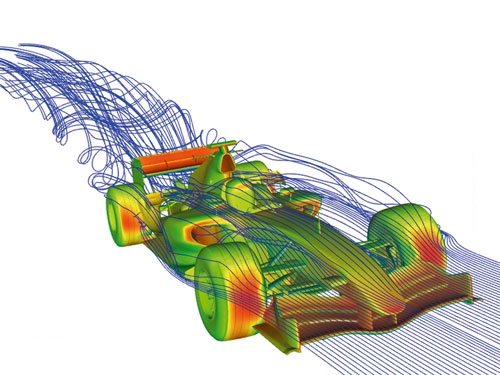
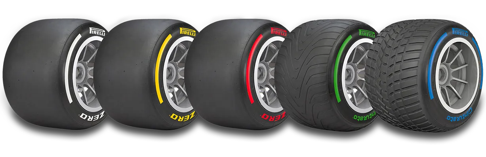
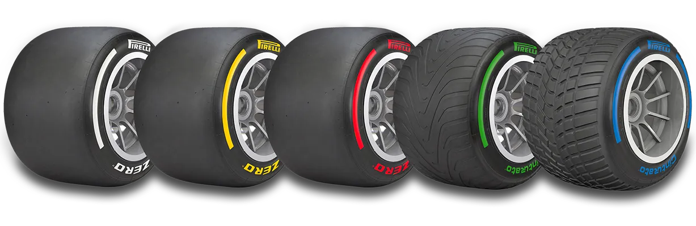
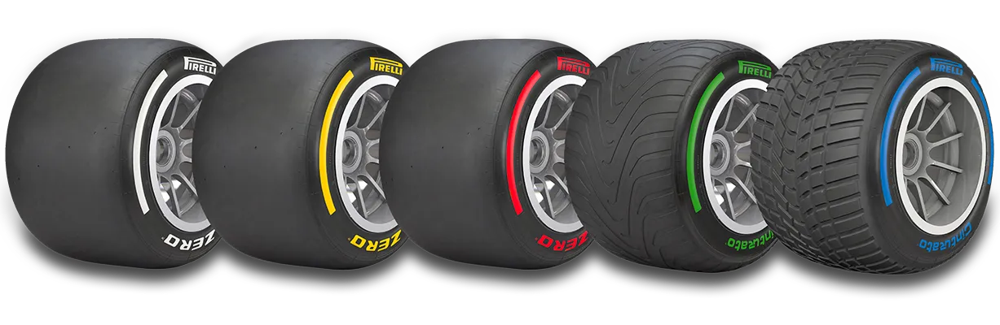

Regles bàsiques
1. Reglament tècnic
- Pes mínim del cotxe: 798 kg (inclòs el pilot, sense combustible).
- Motor híbrid V6 turbo de 1.6 litres amb recuperació d'energia (ERS).
- Alerons i aerodinàmica regulats per normes específiques.
- DRS (Drag Reduction System) només en zones designades i a menys d'un segon del cotxe precedent.
2. Reglament esportiu
- Sortida des de graella després d'una volta d'escalfament.
- Ús obligatori de dos tipus de compostos de pneumàtics en cursa (si no plou).
- Pit-stop sense repostatge de combustible durant la cursa.
- Límits de pista estrictes amb sancions per infraccions.
- Safety Car o Virtual Safety Car en casos de perill.
3. Reglament financer
- Límit anual de despesa: aproximadament 135 milions de dòlars.
4. Reglament de punts i classificació
- Punts per als 10 primers: 25 punts pel guanyador, 1 punt pel desè.
- Punt addicional per la volta ràpida (si es troba entre els 10 primers).
- Classificació del campionat segons punts acumulats.
5. Reglament del cap de setmana de Gran Premi
- Entrenaments lliures per preparar els cotxes.
- Classificació en tres fases (Q1, Q2, Q3) per determinar l'ordre de sortida.
- Cursa Sprint en alguns caps de setmana amb la meitat de voltes i punts.

 

